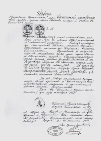
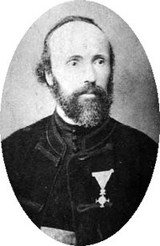

RANI ZIVOT
ДЕТИЊСТВО И РОЂЕЊЕ
Никола је рођен 28. јуна 1856. године по старом, односно 10. јула по новом календару у Смиљану у Лици, као четврто дете од петоро деце Милутина, српског православног свештеника, и мајке Георгине, у Војној крајини Аустријског царства недалеко од границе са Османским царством.Дете је било болешљиво и слабо па су крштење заказали мимо обичаја, сутрадан, бојећи се да неће преживети.
Николин отац је био надарени писац и поета који је поседовао богату библиотеку у којој је и Никола проводио своје детињство читајући и учећи стране језике.Николина мајка била је вредна жена с много талената. Била је врло креативна и својим изумима олакшавала је живот на селу. Сматра се да је Никола Тесла управо од мајке наследио склоност ка истраживачком раду.Теслини родитељи су, осим њега, имали сина Данета и кћерке Ангелину и Милку, које су биле старије од Николе, и Марицу, најмлађе дете у породици Тесла. Дане је погинуо при паду с коња кад је Никола имао пет година и то је оставило велики траг у породици. Дане је сматран изузетно обдареним, док се за Николу веровало да је мање интелигентан.Верује се да је Данетова смрт основни разлог што отац дуго није пристајао да му дозволи да похађа техничку школу далеко од куће.
Николина мајка била је вредна жена с много талената. Била је врло креативна и својим изумима олакшавала је живот на селу. Сматра се да је Никола Тесла управо од мајке наследио склоност ка истраживачком раду.
Теслини родитељи су, осим њега, имали сина Данета и кћерке Ангелину и Милку, које су биле старије од Николе, и Марицу, најмлађе дете у породици Тесла. Дане је погинуо при паду с коња кад је Никола имао пет година и то је оставило велики траг у породици. Дане је сматран изузетно обдареним, док се за Николу веровало да је мање интелигентан. Верује се да је Данетова смрт основни разлог што отац дуго није пристајао да му дозволи да похађа техничку школу далеко од куће.

ШКОЛОВАЊЕ
Први разред основне школе похађао је у родном Смиљану. Отац Милутин рукоположен је за проту у Госпићу, те се породица преселила у ово место 1862. године.
У Госпићу је Никола први пут скренуо пажњу на себе када је један трговац организовао ватрогасну службу. На показној вежби којој је присуствовало мноштво Госпићана, ватрогасци нису успели да испумпају воду из реке Лике. Стручњаци су покушали да открију разлог зашто пумпа не вуче воду, али безуспешно. Тесла, који је тада имао седам или осам година, је инстиктивно решио проблем ушавши у реку и отчепивши други крај црева. Због тога је слављен као херој дана.
Тешко се разболео на крају трећег разреда школе 1870. године. С јесени је отишао у Раковац крај Карловца да заврши још три разреда Велике реалке. Матурирао је 24. јула 1873. године у групи од свега седам ученика са врло добрим успехом јер је из нацртне геометрије био довољан. Тада је имао 17 година. Након завршене матуре вратио се у Госпић и већ први дан разболео од колере. Боловао је девет месеци. У тим околностима успео је да убеди оца да му обећа да ће га уместо на богословију уписати на студије технике.
